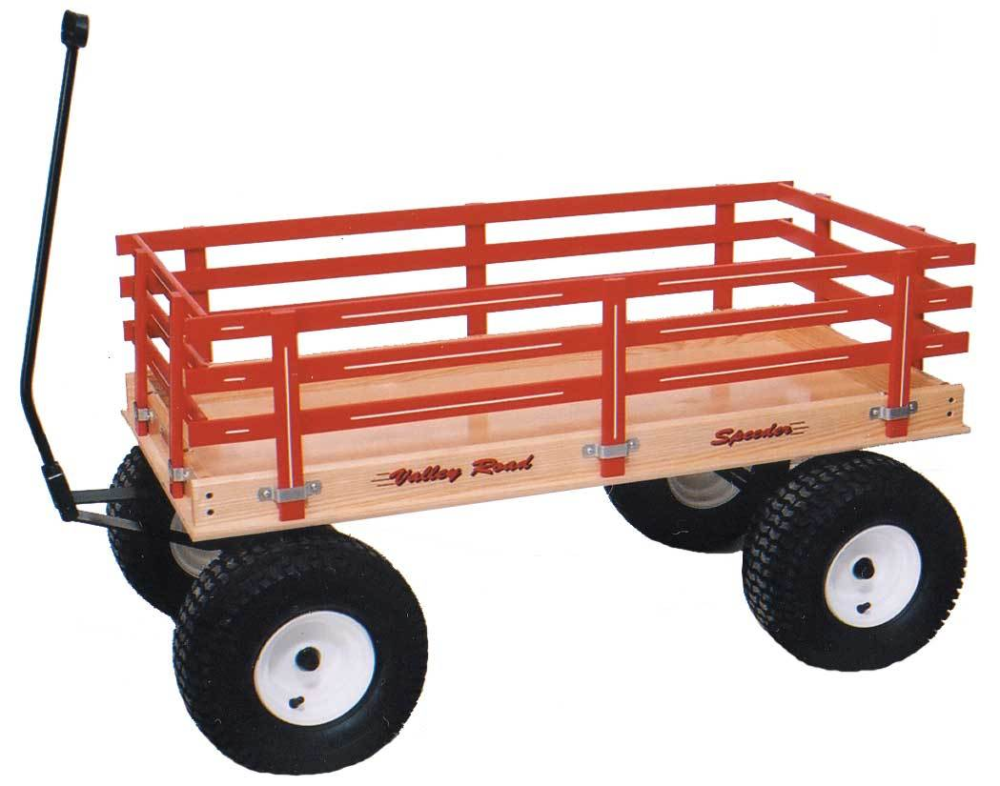

chapter10.3--handout
Background Information
Baggage-truck以及各类推车
At the station the train was late, and we sat on a baggage-truck and waited outside in the dark.（我们在车站外面的黑地里，坐在推行李的手车上等着。）
这里的baggage-truck可不是装着行李的卡车哦~truck在这里指“手推车，手拉车”（a simple piece of equipment on wheels used to move heavy objects）, 类似这样的↓
这里再给大家介绍几种常见推车的英文~
Wheelbarrow 是独轮或两轮推车，这种要靠手抬起才能推动↓
Dolly 是载重手推车, 这种推车用来短途运东西是最方便的了，既平稳又省力↓
Cart 一般就是指我们逛商场会用到的shopping cart, 最常见的是下面这种↓
Wagon 在美式英语里主要就是指四轮车（一般是体型比较小的），比如美国有一家卖婴儿车的公司就叫作Kinderwagon.

Vocabulary
ring
n. 戒指；铃声，钟声；环形物
拳击场，摔跤台（a small square area surrounded by ropes, where people box or wrestle）
原文：We sat in the Irufla for a while and had coffee and then took a little walk out to the bull-ring...
我们在“伊鲁涅”坐了一会儿，喝了咖啡，然后出来走一小段路到了斗牛场……
💧ring 除了可以指“拳击场，摔跤台”以外，还可以指马戏团的圆形表演场.
💧ring 另一个和（圆形或方形）场地联系不大的义项是指“团伙，帮派”，并且一般是从事非法活动的（in illegal business or criminal activity）. 比如：Are you aware that a drugs ring is being operated in the club?
你有没有发现俱乐部里有贩毒团伙在活动？
confidential
adj. 机密的；秘密的（spoken or written in secret and intended to be kept secret）
表示信任的（marked by willingness to confide）
原文：He was being confidential now and it was giving him pleasure to be able to talk with the understanding that I knew there was something between him and Brett.
他这是对我讲的知心话，他知道我了解他和勃莱特的底细，所以可以对我吐吐衷肠，这使他很高兴。
💧confidence 我们介绍过有“机密”的意思，confidences还可以指“掏心窝的话”。由此延伸出的形容词confidential 一般指“机密的”，比如sth is strictly confidential表示“绝对机密的”；
💧但原文confidential意思稍有不同，表示“信任的，毫无隐藏的吐露”，这里指Cohn在了解Jake知道实情后，就开始把话摊开来说而不是隐隐藏藏的了。
Crush Your Problems
1、I have never seen a man in civil life as nervous as Robert Cohn — nor as eager.
我在非战时的生活中，从没见过一个人像罗伯特·科恩此时这么紧张，这么急切。
💧表达精讲
in civil life 在这里指“非战时的生活”，civil有几个基本的含义：
①“公民的”（relating to all citizens）, 这个义项强调囊括整个国家的公民在内的，比如civil rights是“公民权”，civil war则是“内战”；
②“平民的”，强调和“普通民众相关的”（ralating to ordinary people）, 主要和“军事的”（military）或“宗教的”（religious）相对，比如：They were married in a civil ceremony in May. 这里就是指非教堂式的婚礼。
③“民事的”，这个是在法律层面上和“刑事的”（criminal）区分开，比如civil law就是“民法”。
这里的civil life最恰当的理解是“平民生活”（再具体一点，也就是译文中的“非战时”，因为这个时候正好是一战后）。Jake的语气里其实是对Cohn的调侃（而且Cohn是这本小说的主角里唯一一个没有上过战场的），他对于Mike和Brett到来的紧张程度让人感觉既严肃又可笑。
2、It was lousy to enjoy it, but I felt lousy.
这种高兴的情绪是恶劣的，但我的确也感觉到了不适。
💧表达精讲
这里的两个lousy含义是不一样的哦~第一个lousy表示“非常糟糕的”（very awful, terrible）, 比如：The film was lousy!（这部片子真是烂透了！）也就是Jake觉得自己的这种幸灾乐祸的情绪是很不厚道的。
第二个lousy表示“不适的”（feeling ill, unwell）,这种不适来源于“他总能在任何人身上唤起最丑恶的本质”（Cohn had a wonderful quality of bringing out the worst in anybody.）
3、I do not think I ever really hated him until he had that little spell of superiority at lunch — that and when he went through all that barbering.
我看，起先我也并不真心恨他，直到他在就餐时表现出那副无所不知的样子——这还不算，还去理发、洗头、搽油什么的闹了一通。
💧表达精讲
①had that little spell of superiority “表现出那副无所不知的样子”；这里的superiority针对的是当时Cohn语气非常坚定地说Mike和Brett当天晚上一定没法到："I rather think they're not coming," Robert Cohn said. He said it with an air of superior knowledge that irritated both of us.（Chapter 10.2）
spell 本身有“魔法（咒）”的意思，比如童话里经常出现的女巫给某某施了魔咒就是cast a spell on sb, 解除魔咒则是break a spell.
因此spell也延伸出了“对某人有某种影响力（就好像施了魔咒一样）”（to have control or influence over sb）的意思。这里就是指Cohn的那种无所不知的优越感一直萦绕在Jake的脑海里，让他感觉非常闹心。
②all that barbering 则是指Cohn和Jake准备去车站看Brett和Mike是否赶上最后一趟火车之前，Cohn精心梳洗打扮了一番：At dinner that night we found that Robert Cohn had taken a bath, had had a shave and a haircut and a shampoo, and something put on his hair afterward to make it stay down.（Chapter 10.2）
barber 除了作名词表示“男理发师”外，还可以直接用来形容“剪发、刮胡子、做造型”这一系列动作（to cut one's hair or trim one's beard）. barbering也可以用hairdressing或grooming来表示哦~
4、"I slept like a log."
“睡得像死过去一样。”
💧表达精讲
sleep like a log 是一句俚语，log本身指“大木头，原木”（a thick piece of wood）, 也就是从树上砍下来后劈好的准备用来烧火的木柴，睡得像木头一样一动不动也就是形容睡得很沉（to sleep soundly）.
💧知识拓展
除了形容睡得像“死木”一样，类似的俚语表达还有sleep like a baby以及sleep like a top哦~ 据考证，sleep like a top可能是莎士比亚本人的原创（在他的《两个高贵的亲戚》里出现），那么top在这里怎么理解呢？
top 其实是指一种玩具——陀螺（也可以叫spinning top）. 陀螺的特点就是在没有外力的情况下（比如鞭、抽、捻、弹等等）是没法自己转起来的，用来形容一个人一睡不起再合适不过啦~
5、"How did you ever happen to know this fellow anyway?"
"Don't rub it in."
“不过你怎么认识这个家伙的？”
“别提了。”
💧表达精讲
rub 原本有“揉，蹭”的意思，并且常指“磨损，磨痛”，比如：Badly fitting shoes are bound to rub.（不合适的鞋子肯定磨脚。）
这里rub sth in延伸为“提及（某人感到尴尬的事情）；触及（某人痛处）”，总之就是让别人感觉不舒服甚至痛苦。比如：Was he trying to rub in the fact that he didn’t think much of me?（他是不是在提醒我，他认为我不怎么样？）
Content Analysis
Cohn和Jake在火车站并没有等来Mike和Brett，结果当然是Cohn赢了打赌，但他似乎兴致全无了（"Oh, forget about it," Robert Cohn said. "Let's bet on something else."）而且第二天还提出自己要留在潘普洛纳（Pamplona）等两位迟到的朋友（"But I ought to stay. I really ought. As soon as they come I'll bring them right up"）.
Jake在这个过程则因为嫉妒心作祟一直和Cohn作对，包括故意用言语刺激他。接下来我们就来看看作者是如何展现这两个角色的心理活动以及他们正在暗中进行的角力——
首先是报复心很强的Jake：
💧Clue 1:Jake is quite revengeful.
Evidence 1:"I knew they wouldn't come," Robert said. We were going back to the hotel.
"I thought they might," I said.
“我早知道他们是不会来的。”罗伯特说。我们走回旅馆。
“我倒以为他们可能会来的。”我说。
不知道大家是否记得，在Bill和Cohn打赌的时候，Jake可不认为Mike和Brett会准时到达："They're always late," I said. 以及当Bill问他自己是不是打了一个很愚蠢的赌的时候，Jake的回答是："You've got a rotten chance. They've never been on time anywhere. If their money doesn't come it's a cinch they won't get in tonight."
那么这里Jake为什么要特意说"I thought they might"这句话呢？可能的解释就是为了刺激Cohn，因为这里Cohn表现出了相当的失落，并且Jake当时要陪Cohn一起来车站也是带着想戏弄他的心态（I said I would go with him, just to devil him）.
Jake的小心思还不仅如此，我们再来看当他收到Mike和Brett传来的电报时是怎么做的：
Evidence 2: "It's from them," I said. I put it in my pocket. Ordinarily I should have handed it over.
“这是他们打来的。”我说，顺手把电报往口袋里一塞。放在平时，我就给大家看了。
关于这里的行为，Jake自己已经给出解释了：I was blind, unforgivingly jealous of what had happened to him. 意思其实就是“不管看起来多盲目还是小心眼，我就是很嫉妒他”。Jake出于不平衡的心理，因为Cohn和Brett已经拥有属于他们的秘密（两人一起去了圣塞巴斯蒂安），所以他也要把这封电报据为己有（虽然的确就是发给他的：The telegram came to me, anyway.）他的目的就是向Cohn“宣示”他和Mike以及Brett俩人也非常亲密（intimate）.
再来看Cohn的心理活动。这一部分并没有直接摊开在纸面上展现（毕竟是从Jake的视角来描述的），但作者还是留下了足够的关键细节来试图向读者“传达”Cohn前后的心路历程，并且我们还会发现，Cohn其实非常单纯并且很容易轻信别人：
💧Clue 2: Cohn is liable to trust people.
Evidence 1: "That's just it," said Robert. "I'm afraid they expected to meet me at San Sebastian, and that's why they stopped over."
"What makes you think that?"
"Well, I wrote suggesting it to Brett."
“正是如此，”罗伯特说，“我怕他们会指望在圣塞巴斯蒂安同我碰头，因此他们才在那里耽搁下来。”
“你凭什么会这么想？”
“呃，我写信给勃莱特这么提过。”
Cohn一开始面对Jake是非常紧张的，因为他不知道Jake是否知道自己跟Brett之间的事情，但是现在当他提出要在潘普洛纳等Mike和Brett从圣塞巴斯蒂安过来的时候，并没有对原因遮遮掩掩，按照Jake的话说，他现在倒是很坦诚直白了（He was being confidential now）. 那么这个变化是如何发生的呢，我们来看下文Bill透露的一件事：
Evidence 2: "Oh, yes, he told me all about it last night," Bill said. "He's a great little confider. He said he had a date with Brett at San Sebastian."
“哦，是的，他昨儿晚上通通告诉我了。”比尔说。“他讲起知心话来可真了不起。他说他曾和勃莱特约定在圣塞巴斯蒂安相会。”
这里的last night其实就是Cohn和Jake一起去车站等Mike和Brett的这天晚上，其实在前面Cohn 已经透露了自己和Bill有过一次“交心”："I didn't sleep very well. Bill and I were out late, too." "Where were you?" "Here. And after it shut we went over to that other café."
到这里我们已经基本可以摸清Cohn的一系列心理变化了：首先他早已经和Brett约定过要在圣塞巴斯蒂安碰面，这也解释了他为什么会那么笃定地跟Bill打赌说Mike和Brett一定不会当晚到（"I rather think they're not coming," Robert Cohn said）. 当然他还顾虑着自己和Brett的那趟秘密之旅到底有没有被公开，所以他还是遮遮掩掩的。
直到在车站没有等来Mike和Brett的时候，这也是意料之中的，他感到了纠结（因为他知道这是因为自己和Brett的约定）。于是这天晚上他就找Bill袒露了自己的秘密（可能Bill在这个时候也向他透露了自己和Jake都已经知道他跟Brett的事），所以第二天他就马上做出自己要留在这里等Mike和Brett的决定。
看完以上分析大家也可以再回顾一遍原文哦~
Today's Bonus
💧除了失眠，还有哪些睡眠障碍？
我们在前面介绍了sleep like a log这个表达，也就是“睡得像死木一样”。睡得香又沉当然是一件好事，尤其是现在的人很多都患有失眠症（Insomnia），但有时候“一睡不起”也可能是身体出现毛病的预警哦~比如患上嗜睡症。
今天的彩蛋就来给大家科普一下除了失眠，一般还有哪些常见的睡眠障碍~
1. Hypersomnia 嗜睡症
嗜睡症患者不分场合表现为经常困乏思睡，出现不同程度、不可抗拒的入睡。一般分为两种，一种是夜晚睡眠延长（prolonged nighttime sleep），另一种是白天睡意过多（excessive daytime sleepiness）.
嗜睡症带来的危害就是过多的睡眠会引起显著痛苦或职业、社交等社会功能（causing distress and problems with functioning）和生活质量的下降。也会有认知功能方面的改变，表现为近事记忆减退，思维能力下降，学习新事物能力下降。
目前认为导致嗜睡症的原因有相当一部分是心理因素，比如抑郁症患者也极有可能患上嗜睡症（来自潜意识里对现实的逃避，所以通过麻痹大脑进入睡眠来缓解紧张和焦虑）。
2. Sleep paralysis 睡眠瘫痪
睡眠瘫痪其实就是我们俗话说的“鬼压床”，表现为睡眠处于半睡半醒的状况（half awakening），同时还出现各种各样的幻觉（hallucinations），甚至还能听见周围的声音，但无论自己再怎样用力，却都使不上力来，想大叫也叫不出声，想睁开眼或翻身起床也一动不能动。拼命挣扎醒来后会尤其疲惫甚至满身大汗。
资料显示超过百分之五十的人体验过“睡眠瘫痪症”，科学家已经确定此种症状与生活压力有关，多发于青少年以及年轻人。此类人群通常生活和心理压力过大（psychological distress），作息时间不规律（abnormal sleep cycles），睡眠不足（sleep deprivation）以及经常性焦虑（anxiety）等，这些因素都是可能造成睡眠瘫痪症的原因。
3. Sleepwalking 梦游症
梦游症俗称“迷症”，是指睡眠中突然爬起来进行活动，而后又睡下，醒后对睡眠期间的活动一无所知。夜游症不是发生在梦中，而是发生在睡眠的第3-4期深睡阶段，此阶段集中于前半夜。故夜游症通常发生在入睡后的前2-3小时。

部分儿童发生梦游症与心理社会因素相关。如日常生活规律紊乱，环境压力，焦虑不安及恐惧情绪；家庭关系不和，亲子关系欠佳，学习紧张及考试成绩不佳等与梦游症的发生有一定的关系。
并且由于梦游症常常发生在睡眠的前1/3深睡期，故各种使睡眠加深的因素，如白天过度劳累、连续几天熬夜引起睡眠不足、睡前服用安眠药物等，均可诱发梦游症的发生。
4. Sleeptalking 梦呓症
首先梦呓发生在沉睡阶段而不是做梦的阶段：据研究，人睡着后并不表示大脑会完全休息，反而更加活跃。入睡后我们会进入浅睡期（REM, Rapid Eyes Movement），此时会做梦；以及深睡期，此时眼球活动减慢。浅睡期及深睡期两者成一循环，第一个循环时间较短，第二个循环时间较长，到第三个循环的深睡期，则或会有梦游或说梦话的现象。
梦呓症虽然不能算是严格意义上的睡眠障碍，但也在某种程度上反应了可能当前身体健康状况不佳。引起说梦话的原因很多有可能是压力过大、精神紧张诱发的。因此经常说梦话的人一定要加强锻炼，同时更要注意休息,调节工作、生活所带来的压力。
好的睡眠也是给身体的充电，如果出现了以上症状的预警信号一定不要忽视哦~